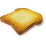

Developers
Dylan Katz
Samuel Meyerding
Ryan Vichitthavong
| My name is Samuel Meyerding, and I would like to say welcome to my webpage. I decided to go for a simple look that's easy on the eyes in order to save time and because I quite like the look. I'm a computer scientist with a bachelor's degree in Computer Science and Software Engineering from the University of Washington Bothell. I am now going to talk about some of my more favorite computer science projects I've worked on in my life. |
| Ghostlight Manor |
| I am the developer lead for Ghostlight Manor. Ghostlight Manor is a 2-d game made in Unity using C#. While I have been the developer lead, I have added AI opponents, split screen multiplayer over a network, a new UI navigation system for controllers, various redesigns of UI for different parts of the game, and a new tutorial for multiplayer. We have pushed all of these changes to the Steam build of the game. |
| Corrupted |
| I worked on Corrupted for a year starting during June 2017. It is a 2-d Unity game that is a mash up between a match 3 game and a spin on Breakout. When I first started working on Corrupted, it was a very buggy mess of a game. The first build of the game I played was called SomehwatWorkingCorrupted. It had optimization issues, crashes, features that didn't work, and multiple game breaking bugs. It is currently a working demo. |
| Toast Lovers! |
| I worked on a 2-d tower defence game in a custom Javascript game engine for a class called 2-d Game Engine Development. There were two other people working on this project, and we made the game in three weeks. The game was about defending a piece of toast in the middle of the map from ants. The game works best in Firefox. |
|
 Developers Dylan Katz Samuel Meyerding Ryan Vichitthavong |
| Maze Generator/solver |
| Implemented a disjoint set algorithm for generating a maze. Algorithm’s worst case was nearly linear. After the maze was generated, treasures were added in random locations. The maze was then explored with a recursive depth first traversal that found the path from start to finish that would find all of the treasures. Below is a screenshot of this program's output. Here's a link to a github page with a Linux and Windows versions of the code Maze |
 |
| 2-D platformer made in Unity Game Engine |
| I have been making a 2-D platform game in Unity on and off since the summer of 2015. This project is still unfinished, but I’ve learned a lot doing it. It’s the only project I’ve done in C#, and I was new to the language when I started the project. Below is some test footage for this game. Also, my brother made the sprite for the on screen character. |
| Simulation of Movie Store Inventory |
| This was a collaborative project where I worked with Tiana Greisel. We implemented an inventory tracker for a movie store that read customers, moveis, and transactions from text files and stored all of that information in data structures. The customers were stored in a hash table, the transactions were stored in a linked list that was part of each customer, and the moveis were stored in a binary tree. |
| Dungeons and Dragons Combat Simulator |
| This was a program to simulate combat between two characters in dungeons and dragons and collect statistical data on which character would win fights the most often. The original purpose of this software was to prove that using two weapons is not a viable strategy compared with using a single weapon with both hands. I eventually added the ability to fight a slime creature that would split into 2 slimes with half as much health whenever it was hit with a weapon. |
| Grading Software |
| This was a program to compile all of the assignments in a folder that followed a specific naming convention. It would then run all of the executables and save their output to a text file. It was only compatible with Windows. I made this as a favor for the professor that I helped with grading. |